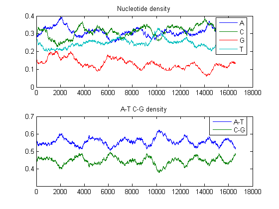
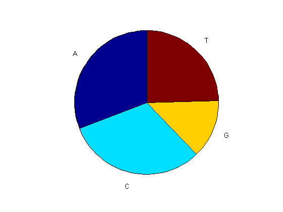
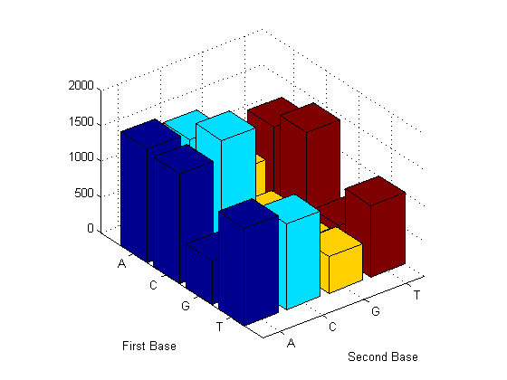
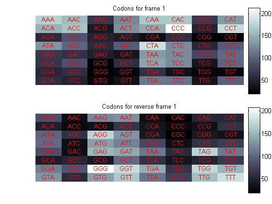
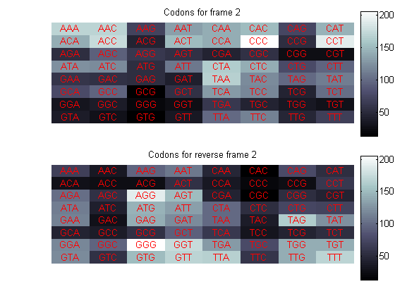
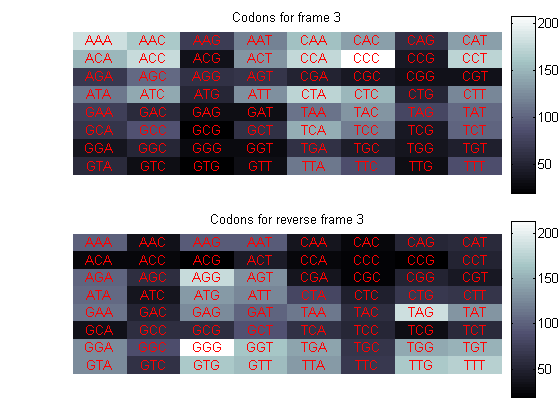
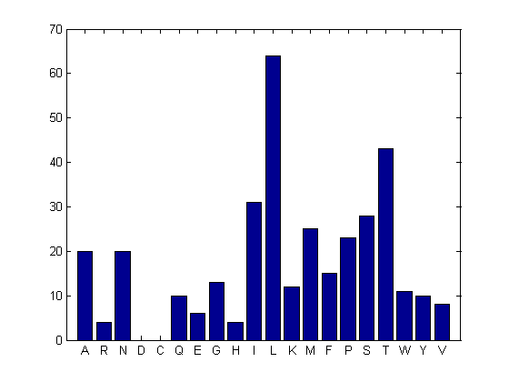
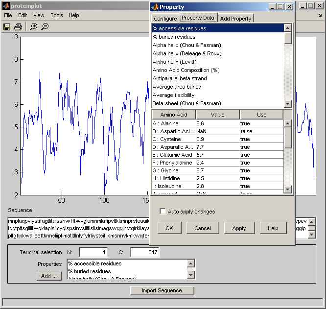

This demonstration looks at some statistics about the DNA content of the human mitochondrial genome.
Mitochondria are generally the major energy production center in eukaryotes. The Genome repository at the NCBI contains more interesting information about the human mitochondrial genome.
web('http://www.ncbi.nlm.nih.gov/genomes/framik.cgi?db=Genome&gi=12188')
The consensus sequence of the human mitochondria genome has accession number NC_001807. The whole GenBank entry is quite large and this example only uses the nucleotide sequence, so you can use the getgenbank function with the 'SequenceOnly' flag to read just the sequence information into the MATLAB workspace.
mitochondria = getgenbank('NC_001807','SequenceOnly',true);
If you don't have a live web connection, you can load the data from a MAT-file using the command
% load mitochondria % <== Uncomment this if no internet connection
The MATLAB whos command gives information about the size of the sequence.
whos mitochondria
Name Size Bytes Class mitochondria 1x16571 33142 char array Grand total is 16571 elements using 33142 bytes
You will use some of the sequence statistics function in the Bioinformatics Toolbox to look at various properties of this sequence. You can look at the composition of the nucleotides with the ntdensity function.
ntdensity(mitochondria)
This shows that the genome is A-T rich. You can get more specific information with the basecount function.
basecount(mitochondria)
ans =
A: 5113
C: 5192
G: 2180
T: 4086
These are on the 5'-3' strand. You can look at the reverse complement using the seqrcomplement function.
basecount(seqrcomplement(mitochondria))
ans =
A: 4086
C: 2180
G: 5192
T: 5113
As expected, the base counts on the reverse complement strand are complementary to the counts on the 5'-3' strand.
You can use the chart option to basecount to display a pie chart of the distribution of the bases.
figure basecount(mitochondria,'chart','pie');
Now look at the dimers in the sequence and display the information in a bar chart using dimercount.
figure dimercount(mitochondria,'chart','bar')
ans =
AA: 1594
AC: 1495
AG: 801
AT: 1223
CA: 1536
CC: 1779
CG: 439
CT: 1438
GA: 615
GC: 716
GG: 427
GT: 421
TA: 1368
TC: 1202
TG: 512
TT: 1004
You can look at codons using codoncount. The function dimercount simply counts all adjacent nucleotides; however codoncount counts the codons on a particular reading frame. With no options, the function shows the codon counts on the first reading frame.
codoncount(mitochondria)
AAA - 172 AAC - 157 AAG - 67 AAT - 123 ACA - 153 ACC - 163 ACG - 42 ACT - 130 AGA - 58 AGC - 90 AGG - 50 AGT - 43 ATA - 132 ATC - 103 ATG - 57 ATT - 96 CAA - 166 CAC - 167 CAG - 68 CAT - 135 CCA - 146 CCC - 215 CCG - 50 CCT - 182 CGA - 33 CGC - 60 CGG - 18 CGT - 20 CTA - 187 CTC - 126 CTG - 52 CTT - 98 GAA - 68 GAC - 62 GAG - 47 GAT - 39 GCA - 67 GCC - 87 GCG - 23 GCT - 61 GGA - 53 GGC - 61 GGG - 23 GGT - 25 GTA - 61 GTC - 49 GTG - 26 GTT - 36 TAA - 136 TAC - 127 TAG - 82 TAT - 107 TCA - 143 TCC - 126 TCG - 37 TCT - 103 TGA - 64 TGC - 35 TGG - 27 TGT - 25 TTA - 115 TTC - 113 TTG - 37 TTT - 99
Using a loop you can also look at all the other reading frames:
for frame = 1:3 figure subplot(2,1,1); codoncount(mitochondria,'frame',frame,'figure',true); title(sprintf('Codons for frame %d',frame)); subplot(2,1,2); codoncount(mitochondria,'reverse',true,'frame',frame,'figure',true); title(sprintf('Codons for reverse frame %d',frame)); end
In a nucleotide sequence an obvious thing to look for is if there are any open reading frames. The function seqshoworfs can be used to visualize ORFs in a sequence. Note: In the HTML tutorial only the first 7500 bases of the first reading frame are shown, however when running the demo you will be able to inspect the complete mitochondrial genome with the aid of the Help Browser .
seqshoworfs(mitochondria);
Frame 1
000001 GATCACAGGTCTATCACCCTATTAACCACTCACGGGAGCTCTCCATGCATTTGGTATTTTCGTC
000065 TGGGGGGTGTGCACGCGATAGCATTGCGAGACGCTGGAGCCGGAGCACCCTATGTCGCAGTATC
000129 TGTCTTTGATTCCTGCCTCATTCTATTATTTATCGCACCTACGTTCAATATTACAGGCGAACAT
000193 ACCTACTAAAGTGTGTTAATTAATTAATGCTTGTAGGACATAATAATAACAATTGAATGTCTGC
000257 ACAGCCGCTTTCCACACAGACATCATAACAAAAAATTTCCACCAAACCCCCCCCTCCCCCCGCT
000321 TCTGGCCACAGCACTTAAACACATCTCTGCCAAACCCCAAAAACAAAGAACCCTAACACCAGCC
000385 TAACCAGATTTCAAATTTTATCTTTAGGCGGTATGCACTTTTAACAGTCACCCCCCAACTAACA
000449 CATTATTTTCCCCTCCCACTCCCATACTACTAATCTCATCAATACAACCCCCGCCCATCCTACC
000513 CAGCACACACACACCGCTGCTAACCCCATACCCCGAACCAACCAAACCCCAAAGACACCCCCCA
000577 CAGTTTATGTAGCTTACCTCCTCAAAGCAATACACTGAAAATGTTTAGACGGGCTCACATCACC
000641 CCATAAACAAATAGGTTTGGTCCTAGCCTTTCTATTAGCTCTTAGTAAGATTACACATGCAAGC
000705 ATCCCCGTTCCAGTGAGTTCACCCTCTAAATCACCACGATCAAAAGGGACAAGCATCAAGCACG
000769 CAGCAATGCAGCTCAAAACGCTTAGCCTAGCCACACCCCCACGGGAAACAGCAGTGATTAACCT
000833 TTAGCAATAAACGAAAGTTTAACTAAGCTATACTAACCCCAGGGTTGGTCAATTTCGTGCCAGC
000897 CACCGCGGTCACACGATTAACCCAAGTCAATAGAAGCCGGCGTAAAGAGTGTTTTAGATCACCC
000961 CCTCCCCAATAAAGCTAAAACTCACCTGAGTTGTAAAAAACTCCAGTTGACACAAAATAGACTA
001025 CGAAAGTGGCTTTAACATATCTGAACACACAATAGCTAAGACCCAAACTGGGATTAGATACCCC
001089 ACTATGCTTAGCCCTAAACCTCAACAGTTAAATCAACAAAACTGCTCGCCAGAACACTACGAGC
001153 CACAGCTTAAAACTCAAAGGACCTGGCGGTGCTTCATATCCCTCTAGAGGAGCCTGTTCTGTAA
001217 TCGATAAACCCCGATCAACCTCACCACCTCTTGCTCAGCCTATATACCGCCATCTTCAGCAAAC
001281 CCTGATGAAGGCTACAAAGTAAGCGCAAGTACCCACGTAAAGACGTTAGGTCAAGGTGTAGCCC
001345 ATGAGGTGGCAAGAAATGGGCTACATTTTCTACCCCAGAAAACTACGATAGCCCTTATGAAACT
001409 TAAGGGTCGAAGGTGGATTTAGCAGTAAACTGAGAGTAGAGTGCTTAGTTGAACAGGGCCCTGA
001473 AGCGCGTACACACCGCCCGTCACCCTCCTCAAGTATACTTCAAAGGACATTTAACTAAAACCCC
001537 TACGCATTTATATAGAGGAGACAAGTCGTAACATGGTAAGTGTACTGGAAAGTGCACTTGGACG
001601 AACCAGAGTGTAGCTTAACACAAAGCACCCAACTTACACTTAGGAGATTTCAACTTAACTTGAC
001665 CGCTCTGAGCTAAACCTAGCCCCAAACCCACTCCACCTTACTACCAGACAACCTTAGCCAAACC
001729 ATTTACCCAAATAAAGTATAGGCGATAGAAATTGAAACCTGGCGCAATAGATATAGTACCGCAA
001793 GGGAAAGATGAAAAATTATAACCAAGCATAATATAGCAAGGACTAACCCCTATACCTTCTGCAT
001857 AATGAATTAACTAGAAATAACTTTGCAAGGAGAGCCAAAGCTAAGACCCCCGAAACCAGACGAG
001921 CTACCTAAGAACAGCTAAAAGAGCACACCCGTCTATGTAGCAAAATAGTGGGAAGATTTATAGG
001985 TAGAGGCGACAAACCTACCGAGCCTGGTGATAGCTGGTTGTCCAAGATAGAATCTTAGTTCAAC
002049 TTTAAATTTGCCCACAGAACCCTCTAAATCCCCTTGTAAATTTAACTGTTAGTCCAAAGAGGAA
002113 CAGCTCTTTGGACACTAGGAAAAAACCTTGTAGAGAGAGTAAAAAATTTAACACCCATAGTAGG
002177 CCTAAAAGCAGCCACCAATTAAGAAAGCGTTCAAGCTCAACACCCACTACCTAAAAAATCCCAA
002241 ACATATAACTGAACTCCTCACACCCAATTGGACCAATCTATCACCCTATAGAAGAACTAATGTT
002305 AGTATAAGTAACATGAAAACATTCTCCTCCGCATAAGCCTGCGTCAGATCAAAACACTGAACTG
002369 ACAATTAACAGCCCAATATCTACAATCAACCAACAAGTCATTATTACCCTCACTGTCAACCCAA
002433 CACAGGCATGCTCATAAGGAAAGGTTAAAAAAAGTAAAAGGAACTCGGCAAACCTTACCCCGCC
002497 TGTTTACCAAAAACATCACCTCTAGCATCACCAGTATTAGAGGCACCGCCTGCCCAGTGACACA
002561 TGTTTAACGGCCGCGGTACCCTAACCGTGCAAAGGTAGCATAATCACTTGTTCCTTAAATAGGG
002625 ACCTGTATGAATGGCTCCACGAGGGTTCAGCTGTCTCTTACTTTTAACCAGTGAAATTGACCTG
002689 CCCGTGAAGAGGCGGGCATGACACAGCAAGACGAGAAGACCCTATGGAGCTTTAATTTATTAAT
002753 GCAAACAGTACCTAACAAACCCACAGGTCCTAAACTACCAAACCTGCATTAAAAATTTCGGTTG
002817 GGGCGACCTCGGAGCAGAACCCAACCTCCGAGCAGTACATGCTAAGACTTCACCAGTCAAAGCG
002881 AACTACTATACTCAATTGATCCAATAACTTGACCAACGGAACAAGTTACCCTAGGGATAACAGC
002945 GCAATCCTATTCTAGAGTCCATATCAACAATAGGGTTTACGACCTCGATGTTGGATCAGGACAT
003009 CCCGATGGTGCAGCCGCTATTAAAGGTTCGTTTGTTCAACGATTAAAGTCCTACGTGATCTGAG
003073 TTCAGACCGGAGTAATCCAGGTCGGTTTCTATCTACTTCAAATTCCTCCCTGTACGAAAGGACA
003137 AGAGAAATAAGGCCTACTTCACAAAGCGCCTTCCCCCGTAAATGATATCATCTCAACTTAGTAT
003201 TATACCCACACCCACCCAAGAACAGGGTTTGTTAAGATGGCAGAGCCCGGTAATCGCATAAAAC
003265 TTAAAACTTTACAGTCAGAGGTTCAATTCCTCTTCTTAACAACATACCCATGGCCAACCTCCTA
003329 CTCCTCATTGTACCCATTCTAATCGCAATGGCATTCCTAATGCTTACCGAACGAAAAATTCTAG
003393 GCTATATACAACTACGCAAAGGCCCCAACGTTGTAGGCCCCTACGGGCTACTACAACCCTTCGC
003457 TGACGCCATAAAACTCTTCACCAAAGAGCCCCTAAAACCCGCCACATCTACCATCACCCTCTAC
003521 ATCACCGCCCCGACCTTAGCTCTCACCATCGCTCTTCTACTATGAACCCCCCTCCCCATACCCA
003585 ACCCCCTGGTCAACCTCAACCTAGGCCTCCTATTTATTCTAGCCACCTCTAGCCTAGCCGTTTA
003649 CTCAATCCTCTGATCAGGGTGAGCATCAAACTCAAACTACGCCCTGATCGGCGCACTGCGAGCA
003713 GTAGCCCAAACAATCTCATATGAAGTCACCCTAGCCATCATTCTACTATCAACATTACTAATAA
003777 GTGGCTCCTTTAACCTCTCCACCCTTATCACAACACAAGAACACCTCTGATTACTCCTGCCATC
003841 ATGACCCTTGGCCATAATATGATTTATCTCCACACTAGCAGAGACCAACCGAACCCCCTTCGAC
003905 CTTGCCGAAGGGGAGTCCGAACTAGTCTCAGGCTTCAACATCGAATACGCCGCAGGCCCCTTCG
003969 CCCTATTCTTCATAGCCGAATACACAAACATTATTATAATAAACACCCTCACCACTACAATCTT
004033 CCTAGGAACAACATATGACGCACTCTCCCCTGAACTCTACACAACATATTTTGTCACCAAGACC
004097 CTACTTCTAACCTCCCTGTTCTTATGAATTCGAACAGCATACCCCCGATTCCGCTACGACCAAC
004161 TCATACACCTCCTATGAAAAAACTTCCTACCACTCACCCTAGCATTACTTATATGATATGTCTC
004225 CATACCCATTACAATCTCCAGCATTCCCCCTCAAACCTAAGAAATATGTCTGATAAAAGAGTTA
004289 CTTTGATAGAGTAAATAATAGGAGCTTAAACCCCCTTATTTCTAGGACTATGAGAATCGAACCC
004353 ATCCCTGAGAATCCAAAATTCTCCGTGCCACCTATCACACCCCATCCTAAAGTAAGGTCAGCTA
004417 AATAAGCTATCGGGCCCATACCCCGAAAATGTTGGTTATACCCTTCCCGTACTAATTAATCCCC
004481 TGGCCCAACCCGTCATCTACTCTACCATCTTTGCAGGCACACTCATCACAGCGCTAAGCTCGCA
004545 CTGATTTTTTACCTGAGTAGGCCTAGAAATAAACATGCTAGCTTTTATTCCAGTTCTAACCAAA
004609 AAAATAAACCCTCGTTCCACAGAAGCTGCCATCAAGTATTTCCTCACGCAAGCAACCGCATCCA
004673 TAATCCTTCTAATAGCTATCCTCTTCAACAATATACTCTCCGGACAATGAACCATAACCAATAC
004737 TACCAATCAATACTCATCATTAATAATCATAATGGCTATAGCAATAAAACTAGGAATAGCCCCC
004801 TTTCACTTCTGAGTCCCAGAGGTTACCCAAGGCACCCCTCTGACATCCGGCCTGCTTCTTCTCA
004865 CATGACAAAAACTAGCCCCCATCTCAATCATATACCAAATCTCTCCCTCACTAAACGTAAGCCT
004929 TCTCCTCACTCTCTCAATCTTATCCATCATAGCAGGCAGTTGAGGTGGATTAAACCAAACCCAG
004993 CTACGCAAAATCTTAGCATACTCCTCAATTACCCACATAGGATGAATAATAGCAGTTCTACCGT
005057 ACAACCCTAACATAACCATTCTTAATTTAACTATTTATATTATCCTAACTACTACCGCATTCCT
005121 ACTACTCAACTTAAACTCCAGCACCACGACCCTACTACTATCTCGCACCTGAAACAAGCTAACA
005185 TGACTAACACCCTTAATTCCATCCACCCTCCTCTCCCTAGGAGGCCTGCCCCCGCTAACCGGCT
005249 TTTTGCCCAAATGGGCCATTATCGAAGAATTCACAAAAAACAATAGCCTCATCATCCCCACCAT
005313 CATAGCCACCATCACCCTCCTTAACCTCTACTTCTACCTACGCCTAATCTACTCCACCTCAATC
005377 ACACTACTCCCCATATCTAACAACGTAAAAATAAAATGACAGTTTGAACATACAAAACCCACCC
005441 CATTCCTCCCCACACTCATCGCCCTTACCACGCTACTCCTACCTATCTCCCCTTTTATACTAAT
005505 AATCTTATAGAAATTTAGGTTAAATACAGACCAAGAGCCTTCAAAGCCCTCAGTAAGTTGCAAT
005569 ACTTAATTTCTGCAACAGCTAAGGACTGCAAAACCCCACTCTGCATCAACTGAACGCAAATCAG
005633 CCACTTTAATTAAGCTAAGCCCTTACTAGACCAATGGGACTTAAACCCACAAACACTTAGTTAA
005697 CAGCTAAGCACCCTAATCAACTGGCTTCAATCTACTTCTCCCGCCGCCGGGAAAAAAGGCGGGA
005761 GAAGCCCCGGCAGGTTTGAAGCTGCTTCTTCGAATTTGCAATTCAATATGAAAATCACCTCGGA
005825 GCTGGTAAAAAGAGGCCTAACCCCTGTCTTTAGATTTACAGTCCAATGCTTCACTCAGCCATTT
005889 TACCTCACCCCCACTGATGTTCGCCGACCGTTGACTATTCTCTACAAACCACAAAGACATTGGA
005953 ACACTATACCTATTATTCGGCGCATGAGCTGGAGTCCTAGGCACAGCTCTAAGCCTCCTTATTC
006017 GAGCCGAGCTGGGCCAGCCAGGCAACCTTCTAGGTAACGACCACATCTACAACGTTATCGTCAC
006081 AGCCCATGCATTTGTAATAATCTTCTTCATAGTAATACCCATCATAATCGGAGGCTTTGGCAAC
006145 TGACTAGTTCCCCTAATAATCGGTGCCCCCGATATGGCGTTTCCCCGCATAAACAACATAAGCT
006209 TCTGACTCTTACCTCCCTCTCTCCTACTCCTGCTCGCATCTGCTATAGTGGAGGCCGGAGCAGG
006273 AACAGGTTGAACAGTCTACCCTCCCTTAGCAGGGAACTACTCCCACCCTGGAGCCTCCGTAGAC
006337 CTAACCATCTTCTCCTTACACCTAGCAGGTGTCTCCTCTATCTTAGGGGCCATCAATTTCATCA
006401 CAACAATTATCAATATAAAACCCCCTGCCATAACCCAATACCAAACGCCCCTCTTCGTCTGATC
006465 CGTCCTAATCACAGCAGTCCTACTTCTCCTATCTCTCCCAGTCCTAGCTGCTGGCATCACTATA
006529 CTACTAACAGACCGCAACCTCAACACCACCTTCTTCGACCCCGCCGGAGGAGGAGACCCCATTC
006593 TATACCAACACCTATTCTGATTTTTCGGTCACCCTGAAGTTTATATTCTTATCCTACCAGGCTT
006657 CGGAATAATCTCCCATATTGTAACTTACTACTCCGGAAAAAAAGAACCATTTGGATACATAGGT
006721 ATGGTCTGAGCTATGATATCAATTGGCTTCCTAGGGTTTATCGTGTGAGCACACCATATATTTA
006785 CAGTAGGAATAGACGTAGACACACGAGCATATTTCACCTCCGCTACCATAATCATCGCTATCCC
006849 CACCGGCGTCAAAGTATTTAGCTGACTCGCCACACTCCACGGAAGCAATATGAAATGATCTGCT
006913 GCAGTGCTCTGAGCCCTAGGATTCATCTTTCTTTTCACCGTAGGTGGCCTGACTGGCATTGTAT
006977 TAGCAAACTCATCACTAGACATCGTACTACACGACACGTACTACGTTGTAGCTCACTTCCACTA
007041 TGTCCTATCAATAGGAGCTGTATTTGCCATCATAGGAGGCTTCATTCACTGATTTCCCCTATTC
007105 TCAGGCTACACCCTAGACCAAACCTACGCCAAAATCCATTTCACTATCATATTCATCGGCGTAA
007169 ATCTAACTTTCTTCCCACAACACTTTCTCGGCCTATCCGGAATGCCCCGACGTTACTCGGACTA
007233 CCCCGATGCATACACCACATGAAACATCCTATCATCTGTAGGCTCATTCATTTCTCTAACAGCA
007297 GTAATATTAATAATTTTCATGATTTGAGAAGCCTTCGCTTCGAAGCGAAAAGTCCTAATAGTAG
007361 AAGAACCCTCCATAAACCTGGAGTGACTATATGGATGCCCCCCACCCTACCACACATTCGAAGA
007425 ACCCGTATACATAAAATCTAGACAAAAAAGGAAGGAATCGAACCCCCCAAAGCTGGTTTCAAGC
007489 CAACCCCATGGC
If you compare this output to the genes shown on the NCBI page there seem to be slightly fewer ORFs, and hence fewer genes, than expected. Vertebrate mitochondria do not use the Standard genetic code so some codons have different meaning in mitochondrial genomes. For more information about using different genetic codes in MATLAB see the help for the function geneticcode.
help geneticcode
GENETICCODE returns a structure containing mappings for the genetic code.
MAP = GENETICCODE returns a structure containing mapping for the Standard
genetic code.
GENETICCODE(ID) returns a structure of the mapping for alternate genetic
codes, where ID is either the transl_table ID from the NCBI Genetics web
page (http://www.ncbi.nlm.nih.gov/Taxonomy/Utils/wprintgc.cgi?mode=c)
or one of the following supported names. NAME can be truncated to the
first two characters of the name.
ID Name
1 Standard
2 Vertebrate Mitochondrial
3 Yeast Mitochondrial
4 Mold, Protozoan, and Coelenterate Mitochondrial and Mycoplasma/Spiroplasma
5 Invertebrate Mitochondrial
6 Ciliate, Dasycladacean and Hexamita Nuclear
9 Echinoderm Mitochondrial
10 Euplotid Nuclear
11 Bacterial and Plant Plastid
12 Alternative Yeast Nuclear
13 Ascidian Mitochondrial
14 Flatworm Mitochondrial
15 Blepharisma Nuclear
16 Chlorophycean Mitochondrial
21 Trematode Mitochondrial
22 Scenedesmus Obliquus Mitochondrial
23 Thraustochytrium Mitochondrial
Examples:
moldcode = geneticcode(4)
wormcode = geneticcode('Flatworm Mitochondrial')
See also <a href="matlab:help nt2aa">nt2aa</a>, <a href="matlab:help revgeneticcode">revgeneticcode</a>.
The 'GeneticCode' option to the seqshoworfs function allows you to look at the ORFs again but this time with the vertebrate mitochondrial genetic code. Notice that there are now two much larger ORFs on the first reading frame: One starting at position 4471 and the other starting at 5905. These correspond to the ND2 (NADH dehydrogenase subunit 2) and COX1 (cytochrome c oxidase subunit I) genes.
orfs = seqshoworfs(mitochondria,'GeneticCode','Vertebrate Mitochondrial',... 'alternativestart',true)
orfs =
Start: [1x26 double]
Stop: [1x26 double]
Frame 1
000001 GATCACAGGTCTATCACCCTATTAACCACTCACGGGAGCTCTCCATGCATTTGGTATTTTCGTC
000065 TGGGGGGTGTGCACGCGATAGCATTGCGAGACGCTGGAGCCGGAGCACCCTATGTCGCAGTATC
000129 TGTCTTTGATTCCTGCCTCATTCTATTATTTATCGCACCTACGTTCAATATTACAGGCGAACAT
000193 ACCTACTAAAGTGTGTTAATTAATTAATGCTTGTAGGACATAATAATAACAATTGAATGTCTGC
000257 ACAGCCGCTTTCCACACAGACATCATAACAAAAAATTTCCACCAAACCCCCCCCTCCCCCCGCT
000321 TCTGGCCACAGCACTTAAACACATCTCTGCCAAACCCCAAAAACAAAGAACCCTAACACCAGCC
000385 TAACCAGATTTCAAATTTTATCTTTAGGCGGTATGCACTTTTAACAGTCACCCCCCAACTAACA
000449 CATTATTTTCCCCTCCCACTCCCATACTACTAATCTCATCAATACAACCCCCGCCCATCCTACC
000513 CAGCACACACACACCGCTGCTAACCCCATACCCCGAACCAACCAAACCCCAAAGACACCCCCCA
000577 CAGTTTATGTAGCTTACCTCCTCAAAGCAATACACTGAAAATGTTTAGACGGGCTCACATCACC
000641 CCATAAACAAATAGGTTTGGTCCTAGCCTTTCTATTAGCTCTTAGTAAGATTACACATGCAAGC
000705 ATCCCCGTTCCAGTGAGTTCACCCTCTAAATCACCACGATCAAAAGGGACAAGCATCAAGCACG
000769 CAGCAATGCAGCTCAAAACGCTTAGCCTAGCCACACCCCCACGGGAAACAGCAGTGATTAACCT
000833 TTAGCAATAAACGAAAGTTTAACTAAGCTATACTAACCCCAGGGTTGGTCAATTTCGTGCCAGC
000897 CACCGCGGTCACACGATTAACCCAAGTCAATAGAAGCCGGCGTAAAGAGTGTTTTAGATCACCC
000961 CCTCCCCAATAAAGCTAAAACTCACCTGAGTTGTAAAAAACTCCAGTTGACACAAAATAGACTA
001025 CGAAAGTGGCTTTAACATATCTGAACACACAATAGCTAAGACCCAAACTGGGATTAGATACCCC
001089 ACTATGCTTAGCCCTAAACCTCAACAGTTAAATCAACAAAACTGCTCGCCAGAACACTACGAGC
001153 CACAGCTTAAAACTCAAAGGACCTGGCGGTGCTTCATATCCCTCTAGAGGAGCCTGTTCTGTAA
001217 TCGATAAACCCCGATCAACCTCACCACCTCTTGCTCAGCCTATATACCGCCATCTTCAGCAAAC
001281 CCTGATGAAGGCTACAAAGTAAGCGCAAGTACCCACGTAAAGACGTTAGGTCAAGGTGTAGCCC
001345 ATGAGGTGGCAAGAAATGGGCTACATTTTCTACCCCAGAAAACTACGATAGCCCTTATGAAACT
001409 TAAGGGTCGAAGGTGGATTTAGCAGTAAACTGAGAGTAGAGTGCTTAGTTGAACAGGGCCCTGA
001473 AGCGCGTACACACCGCCCGTCACCCTCCTCAAGTATACTTCAAAGGACATTTAACTAAAACCCC
001537 TACGCATTTATATAGAGGAGACAAGTCGTAACATGGTAAGTGTACTGGAAAGTGCACTTGGACG
001601 AACCAGAGTGTAGCTTAACACAAAGCACCCAACTTACACTTAGGAGATTTCAACTTAACTTGAC
001665 CGCTCTGAGCTAAACCTAGCCCCAAACCCACTCCACCTTACTACCAGACAACCTTAGCCAAACC
001729 ATTTACCCAAATAAAGTATAGGCGATAGAAATTGAAACCTGGCGCAATAGATATAGTACCGCAA
001793 GGGAAAGATGAAAAATTATAACCAAGCATAATATAGCAAGGACTAACCCCTATACCTTCTGCAT
001857 AATGAATTAACTAGAAATAACTTTGCAAGGAGAGCCAAAGCTAAGACCCCCGAAACCAGACGAG
001921 CTACCTAAGAACAGCTAAAAGAGCACACCCGTCTATGTAGCAAAATAGTGGGAAGATTTATAGG
001985 TAGAGGCGACAAACCTACCGAGCCTGGTGATAGCTGGTTGTCCAAGATAGAATCTTAGTTCAAC
002049 TTTAAATTTGCCCACAGAACCCTCTAAATCCCCTTGTAAATTTAACTGTTAGTCCAAAGAGGAA
002113 CAGCTCTTTGGACACTAGGAAAAAACCTTGTAGAGAGAGTAAAAAATTTAACACCCATAGTAGG
002177 CCTAAAAGCAGCCACCAATTAAGAAAGCGTTCAAGCTCAACACCCACTACCTAAAAAATCCCAA
002241 ACATATAACTGAACTCCTCACACCCAATTGGACCAATCTATCACCCTATAGAAGAACTAATGTT
002305 AGTATAAGTAACATGAAAACATTCTCCTCCGCATAAGCCTGCGTCAGATCAAAACACTGAACTG
002369 ACAATTAACAGCCCAATATCTACAATCAACCAACAAGTCATTATTACCCTCACTGTCAACCCAA
002433 CACAGGCATGCTCATAAGGAAAGGTTAAAAAAAGTAAAAGGAACTCGGCAAACCTTACCCCGCC
002497 TGTTTACCAAAAACATCACCTCTAGCATCACCAGTATTAGAGGCACCGCCTGCCCAGTGACACA
002561 TGTTTAACGGCCGCGGTACCCTAACCGTGCAAAGGTAGCATAATCACTTGTTCCTTAAATAGGG
002625 ACCTGTATGAATGGCTCCACGAGGGTTCAGCTGTCTCTTACTTTTAACCAGTGAAATTGACCTG
002689 CCCGTGAAGAGGCGGGCATGACACAGCAAGACGAGAAGACCCTATGGAGCTTTAATTTATTAAT
002753 GCAAACAGTACCTAACAAACCCACAGGTCCTAAACTACCAAACCTGCATTAAAAATTTCGGTTG
002817 GGGCGACCTCGGAGCAGAACCCAACCTCCGAGCAGTACATGCTAAGACTTCACCAGTCAAAGCG
002881 AACTACTATACTCAATTGATCCAATAACTTGACCAACGGAACAAGTTACCCTAGGGATAACAGC
002945 GCAATCCTATTCTAGAGTCCATATCAACAATAGGGTTTACGACCTCGATGTTGGATCAGGACAT
003009 CCCGATGGTGCAGCCGCTATTAAAGGTTCGTTTGTTCAACGATTAAAGTCCTACGTGATCTGAG
003073 TTCAGACCGGAGTAATCCAGGTCGGTTTCTATCTACTTCAAATTCCTCCCTGTACGAAAGGACA
003137 AGAGAAATAAGGCCTACTTCACAAAGCGCCTTCCCCCGTAAATGATATCATCTCAACTTAGTAT
003201 TATACCCACACCCACCCAAGAACAGGGTTTGTTAAGATGGCAGAGCCCGGTAATCGCATAAAAC
003265 TTAAAACTTTACAGTCAGAGGTTCAATTCCTCTTCTTAACAACATACCCATGGCCAACCTCCTA
003329 CTCCTCATTGTACCCATTCTAATCGCAATGGCATTCCTAATGCTTACCGAACGAAAAATTCTAG
003393 GCTATATACAACTACGCAAAGGCCCCAACGTTGTAGGCCCCTACGGGCTACTACAACCCTTCGC
003457 TGACGCCATAAAACTCTTCACCAAAGAGCCCCTAAAACCCGCCACATCTACCATCACCCTCTAC
003521 ATCACCGCCCCGACCTTAGCTCTCACCATCGCTCTTCTACTATGAACCCCCCTCCCCATACCCA
003585 ACCCCCTGGTCAACCTCAACCTAGGCCTCCTATTTATTCTAGCCACCTCTAGCCTAGCCGTTTA
003649 CTCAATCCTCTGATCAGGGTGAGCATCAAACTCAAACTACGCCCTGATCGGCGCACTGCGAGCA
003713 GTAGCCCAAACAATCTCATATGAAGTCACCCTAGCCATCATTCTACTATCAACATTACTAATAA
003777 GTGGCTCCTTTAACCTCTCCACCCTTATCACAACACAAGAACACCTCTGATTACTCCTGCCATC
003841 ATGACCCTTGGCCATAATATGATTTATCTCCACACTAGCAGAGACCAACCGAACCCCCTTCGAC
003905 CTTGCCGAAGGGGAGTCCGAACTAGTCTCAGGCTTCAACATCGAATACGCCGCAGGCCCCTTCG
003969 CCCTATTCTTCATAGCCGAATACACAAACATTATTATAATAAACACCCTCACCACTACAATCTT
004033 CCTAGGAACAACATATGACGCACTCTCCCCTGAACTCTACACAACATATTTTGTCACCAAGACC
004097 CTACTTCTAACCTCCCTGTTCTTATGAATTCGAACAGCATACCCCCGATTCCGCTACGACCAAC
004161 TCATACACCTCCTATGAAAAAACTTCCTACCACTCACCCTAGCATTACTTATATGATATGTCTC
004225 CATACCCATTACAATCTCCAGCATTCCCCCTCAAACCTAAGAAATATGTCTGATAAAAGAGTTA
004289 CTTTGATAGAGTAAATAATAGGAGCTTAAACCCCCTTATTTCTAGGACTATGAGAATCGAACCC
004353 ATCCCTGAGAATCCAAAATTCTCCGTGCCACCTATCACACCCCATCCTAAAGTAAGGTCAGCTA
004417 AATAAGCTATCGGGCCCATACCCCGAAAATGTTGGTTATACCCTTCCCGTACTAATTAATCCCC
004481 TGGCCCAACCCGTCATCTACTCTACCATCTTTGCAGGCACACTCATCACAGCGCTAAGCTCGCA
004545 CTGATTTTTTACCTGAGTAGGCCTAGAAATAAACATGCTAGCTTTTATTCCAGTTCTAACCAAA
004609 AAAATAAACCCTCGTTCCACAGAAGCTGCCATCAAGTATTTCCTCACGCAAGCAACCGCATCCA
004673 TAATCCTTCTAATAGCTATCCTCTTCAACAATATACTCTCCGGACAATGAACCATAACCAATAC
004737 TACCAATCAATACTCATCATTAATAATCATAATGGCTATAGCAATAAAACTAGGAATAGCCCCC
004801 TTTCACTTCTGAGTCCCAGAGGTTACCCAAGGCACCCCTCTGACATCCGGCCTGCTTCTTCTCA
004865 CATGACAAAAACTAGCCCCCATCTCAATCATATACCAAATCTCTCCCTCACTAAACGTAAGCCT
004929 TCTCCTCACTCTCTCAATCTTATCCATCATAGCAGGCAGTTGAGGTGGATTAAACCAAACCCAG
004993 CTACGCAAAATCTTAGCATACTCCTCAATTACCCACATAGGATGAATAATAGCAGTTCTACCGT
005057 ACAACCCTAACATAACCATTCTTAATTTAACTATTTATATTATCCTAACTACTACCGCATTCCT
005121 ACTACTCAACTTAAACTCCAGCACCACGACCCTACTACTATCTCGCACCTGAAACAAGCTAACA
005185 TGACTAACACCCTTAATTCCATCCACCCTCCTCTCCCTAGGAGGCCTGCCCCCGCTAACCGGCT
005249 TTTTGCCCAAATGGGCCATTATCGAAGAATTCACAAAAAACAATAGCCTCATCATCCCCACCAT
005313 CATAGCCACCATCACCCTCCTTAACCTCTACTTCTACCTACGCCTAATCTACTCCACCTCAATC
005377 ACACTACTCCCCATATCTAACAACGTAAAAATAAAATGACAGTTTGAACATACAAAACCCACCC
005441 CATTCCTCCCCACACTCATCGCCCTTACCACGCTACTCCTACCTATCTCCCCTTTTATACTAAT
005505 AATCTTATAGAAATTTAGGTTAAATACAGACCAAGAGCCTTCAAAGCCCTCAGTAAGTTGCAAT
005569 ACTTAATTTCTGCAACAGCTAAGGACTGCAAAACCCCACTCTGCATCAACTGAACGCAAATCAG
005633 CCACTTTAATTAAGCTAAGCCCTTACTAGACCAATGGGACTTAAACCCACAAACACTTAGTTAA
005697 CAGCTAAGCACCCTAATCAACTGGCTTCAATCTACTTCTCCCGCCGCCGGGAAAAAAGGCGGGA
005761 GAAGCCCCGGCAGGTTTGAAGCTGCTTCTTCGAATTTGCAATTCAATATGAAAATCACCTCGGA
005825 GCTGGTAAAAAGAGGCCTAACCCCTGTCTTTAGATTTACAGTCCAATGCTTCACTCAGCCATTT
005889 TACCTCACCCCCACTGATGTTCGCCGACCGTTGACTATTCTCTACAAACCACAAAGACATTGGA
005953 ACACTATACCTATTATTCGGCGCATGAGCTGGAGTCCTAGGCACAGCTCTAAGCCTCCTTATTC
006017 GAGCCGAGCTGGGCCAGCCAGGCAACCTTCTAGGTAACGACCACATCTACAACGTTATCGTCAC
006081 AGCCCATGCATTTGTAATAATCTTCTTCATAGTAATACCCATCATAATCGGAGGCTTTGGCAAC
006145 TGACTAGTTCCCCTAATAATCGGTGCCCCCGATATGGCGTTTCCCCGCATAAACAACATAAGCT
006209 TCTGACTCTTACCTCCCTCTCTCCTACTCCTGCTCGCATCTGCTATAGTGGAGGCCGGAGCAGG
006273 AACAGGTTGAACAGTCTACCCTCCCTTAGCAGGGAACTACTCCCACCCTGGAGCCTCCGTAGAC
006337 CTAACCATCTTCTCCTTACACCTAGCAGGTGTCTCCTCTATCTTAGGGGCCATCAATTTCATCA
006401 CAACAATTATCAATATAAAACCCCCTGCCATAACCCAATACCAAACGCCCCTCTTCGTCTGATC
006465 CGTCCTAATCACAGCAGTCCTACTTCTCCTATCTCTCCCAGTCCTAGCTGCTGGCATCACTATA
006529 CTACTAACAGACCGCAACCTCAACACCACCTTCTTCGACCCCGCCGGAGGAGGAGACCCCATTC
006593 TATACCAACACCTATTCTGATTTTTCGGTCACCCTGAAGTTTATATTCTTATCCTACCAGGCTT
006657 CGGAATAATCTCCCATATTGTAACTTACTACTCCGGAAAAAAAGAACCATTTGGATACATAGGT
006721 ATGGTCTGAGCTATGATATCAATTGGCTTCCTAGGGTTTATCGTGTGAGCACACCATATATTTA
006785 CAGTAGGAATAGACGTAGACACACGAGCATATTTCACCTCCGCTACCATAATCATCGCTATCCC
006849 CACCGGCGTCAAAGTATTTAGCTGACTCGCCACACTCCACGGAAGCAATATGAAATGATCTGCT
006913 GCAGTGCTCTGAGCCCTAGGATTCATCTTTCTTTTCACCGTAGGTGGCCTGACTGGCATTGTAT
006977 TAGCAAACTCATCACTAGACATCGTACTACACGACACGTACTACGTTGTAGCTCACTTCCACTA
007041 TGTCCTATCAATAGGAGCTGTATTTGCCATCATAGGAGGCTTCATTCACTGATTTCCCCTATTC
007105 TCAGGCTACACCCTAGACCAAACCTACGCCAAAATCCATTTCACTATCATATTCATCGGCGTAA
007169 ATCTAACTTTCTTCCCACAACACTTTCTCGGCCTATCCGGAATGCCCCGACGTTACTCGGACTA
007233 CCCCGATGCATACACCACATGAAACATCCTATCATCTGTAGGCTCATTCATTTCTCTAACAGCA
007297 GTAATATTAATAATTTTCATGATTTGAGAAGCCTTCGCTTCGAAGCGAAAAGTCCTAATAGTAG
007361 AAGAACCCTCCATAAACCTGGAGTGACTATATGGATGCCCCCCACCCTACCACACATTCGAAGA
007425 ACCCGTATACATAAAATCTAGACAAAAAAGGAAGGAATCGAACCCCCCAAAGCTGGTTTCAAGC
007489 CAACCCCATGGC
The ORF of interest starts at position 4471, the following commands can be used to find the corresponding stop codon:
ND2Start = 4471; startIndex = find(orfs(1).Start == ND2Start) ND2Stop = orfs(1).Stop(startIndex)
startIndex =
24
ND2Stop =
5512
Once the positions are known, MATLAB indexing can be used to extract the region of interest.
ND2Seq = mitochondria(ND2Start:ND2Stop);
If you look at the codoncount for this gene we see a lot of CTA and ATC codons.
codoncount(ND2Seq)
AAA - 10 AAC - 14 AAG - 2 AAT - 6 ACA - 11 ACC - 24 ACG - 3 ACT - 5 AGA - 0 AGC - 4 AGG - 0 AGT - 1 ATA - 22 ATC - 24 ATG - 2 ATT - 8 CAA - 8 CAC - 3 CAG - 2 CAT - 1 CCA - 4 CCC - 12 CCG - 2 CCT - 5 CGA - 0 CGC - 3 CGG - 0 CGT - 1 CTA - 26 CTC - 18 CTG - 4 CTT - 7 GAA - 5 GAC - 0 GAG - 1 GAT - 0 GCA - 8 GCC - 7 GCG - 1 GCT - 4 GGA - 5 GGC - 7 GGG - 0 GGT - 1 GTA - 3 GTC - 2 GTG - 0 GTT - 3 TAA - 0 TAC - 8 TAG - 0 TAT - 2 TCA - 7 TCC - 11 TCG - 1 TCT - 4 TGA - 10 TGC - 0 TGG - 1 TGT - 0 TTA - 8 TTC - 7 TTG - 1 TTT - 8
For those of you who have not memorized the genetic code you can easily check what amino acids these codons get translated into using the nt2aa and aminolookup functions.
aminolookup('code',nt2aa('CTA')) aminolookup('code',nt2aa('ATC'))
ans = Leu Leucine ans = Ile Isoleucine
The nt2aa function converts the nucleotide sequence to the corresponding amino acid sequence. Again the 'GeneticCode' option must be used to specify the vertebrate mitochondrial genetic code.
ND2 = nt2aa(ND2Seq,'GeneticCode','Vertebrate Mitochondria');
You can get a more complete picture of the amino acid content with aacount.
figure aacount(ND2,'chart','bar')
ans =
A: 20
R: 4
N: 20
D: 0
C: 0
Q: 10
E: 6
G: 13
H: 4
I: 31
L: 64
K: 12
M: 25
F: 15
P: 23
S: 28
T: 43
W: 11
Y: 10
V: 8
Notice the high leucine, threonine and isoleucine content and also the lack of cysteine or aspartic acid.
You can use the atomiccomp and molweight functions to find out more about the ND2 protein.
atomiccomp(ND2) molweight(ND2)
ans =
C: 1818
H: 2882
N: 420
O: 471
S: 25
ans =
3.8960e+004
For further investigation of the properties of the ND2 protein, try using proteinplot. This is a graphical user interface (GUI) that allows you to easily create plots of various properties, such as hydrophobicity, of a protein sequence. Click on the "Help" menu in the GUI for more information on how to use the tool.
proteinplot(ND2)